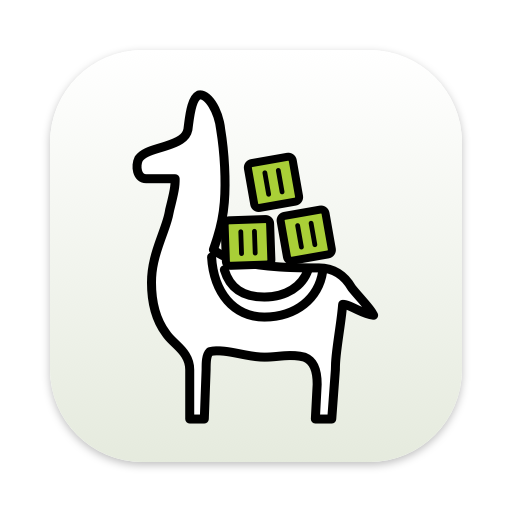
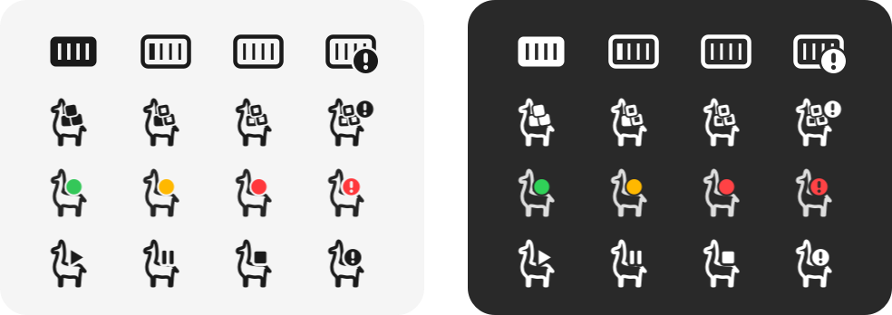

macOS 26+ · Apple silicon & Intel · v0.6.1
Colima,
from the menu bar.
Start and stop the VM, switch profiles, and reach every container — its logs, a shell, its ports — from one llama in the menu bar. Colima Desktop talks to Colima and to the Docker Engine API directly, so the docker CLI is not needed.
ColimaDesktop-0.6.1.dmg · all releases
Needs Colima: brew install colima
Start · stop · restart
The VM's state is the menu bar icon. Stop and restart ask first, colima's progress shows under the status while it works, and a notification says when it is done.
Every container, grouped
Running and stopped, grouped by Compose project. Each one has its details, logs, a shell, its published ports, start, stop and restart — and delete, once it is stopped.
Logs that keep up
Follow or pause, filter with highlighting, stderr in red, and markers you drop yourself so new lines are easy to spot. A bounded buffer and a virtualized list stay responsive.
A shell in the container
An embedded terminal over the Engine API's exec endpoint — no Terminal.app round trip and no docker CLI. The TTY resizes with the window.
Information on demand
VM load, memory and disks, Docker engine facts and disk usage, read only while the Information submenu is open. Click a row to copy its value.
Zero configuration
Finds colima, its home directory and the Docker socket the way colima itself does. Profiles switch from the menu; paths and sockets can be overridden in Settings.
Menu bar icon
The llama tells you how the VM is doing.
Four styles, picked in Settings, all drawn in code from the Colima logo. Three are template images that follow the menu bar's light and dark look; the status light keeps its colours and is redrawn when the bar changes.
- Cubes
- filled when running, hollow when stopped, filling up while it changes
- Light
- green, amber while starting or stopping, red when stopped
- Symbols
- play, pause while it changes, stop
- Container
- the first icon, kept for those who liked it

Logs
Drop a marker, then watch what happens next.
Marker (⌘M) writes a timestamped line into the log, so the
output of the request you are about to make starts right below it. Scrolling up pauses
following; the status bar counts what arrived meanwhile.
The filter matches as you type and keeps markers visible. Copy and Save export exactly the lines on screen. When the container stops, the window says so and offers to reconnect from where it left off.
2026-10-06 10:41:02.118 Ready to accept connections 2026-10-06 10:41:07.904 Accepted 172.17.0.1:52114 2026-10-06 10:41:09.412 ──── Marker 10:41:09 ──── 2026-10-06 10:41:11.003 GET /api/orders 200 14ms 2026-10-06 10:41:11.257 slow query 212ms 2026-10-06 10:41:11.260 GET /api/orders/42 200 9ms
Updates
New versions show up in the menu, not in your way.
Once a day, Colima Desktop checks for a new version with Sparkle. When it finds one, the menu offers Update to 0.7… — no window opens on its own. Choose it, read what changed, and Sparkle installs the update and relaunches the app.
Check for Updates… asks right away; Settings → Updates turns the daily check off. Every release is signed with the project's update key, and the app refuses an update whose signature does not match the key it ships with.
Updates started with 0.6. Coming from 0.5, install the current version by hand once.
Under the hood
Colima's CLI for the VM, Docker's API for the rest.
VM operations run colima without a shell. Everything about containers goes
straight to the profile's Docker socket over HTTP — listing, actions, streamed logs, and
the exec connection the terminal rides on.
The menu stays current without polling hard: it watches Colima's directories for the VM starting and stopping, follows Docker's event stream for containers, and refreshes every two seconds only while the menu is open — updating it in place, so an open submenu stays open.
Built with
Swift 6 with strict concurrency, AppKit for the menu, SwiftUI for the windows, SwiftTerm for the terminal and Sparkle for updates. Layers are separate Swift package targets, so the compiler keeps the views away from processes and sockets. Tests cover the HTTP framing, log decoding and menu logic, and integration tests run against a real Colima.
Getting it running
-
01 · Colima
brew install colima, thencolima start— or let the app start it. Container features need the Docker runtime, which is Colima's default. -
02 · Install
Open the DMG and drag Colima Desktop to Applications.
-
03 · Open it once by hand
The build is signed ad hoc rather than with an Apple Developer ID, so macOS refuses the first launch. Right-click it in Applications, choose Open, confirm. Once only — after that the app updates itself.